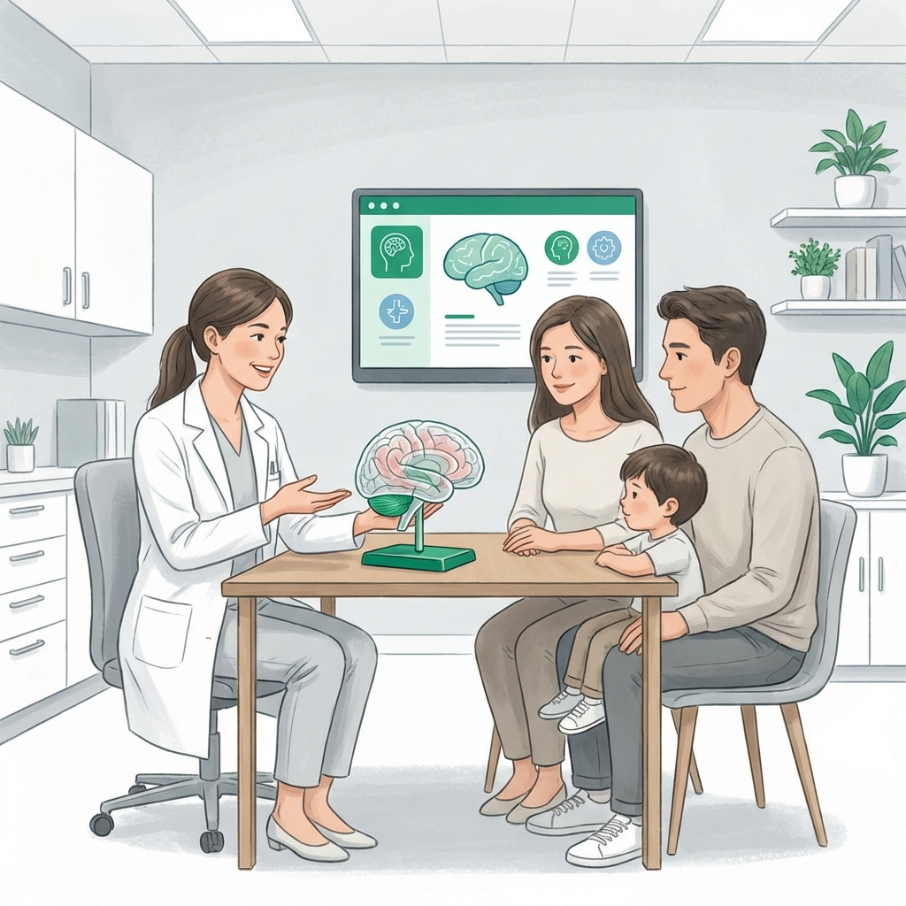
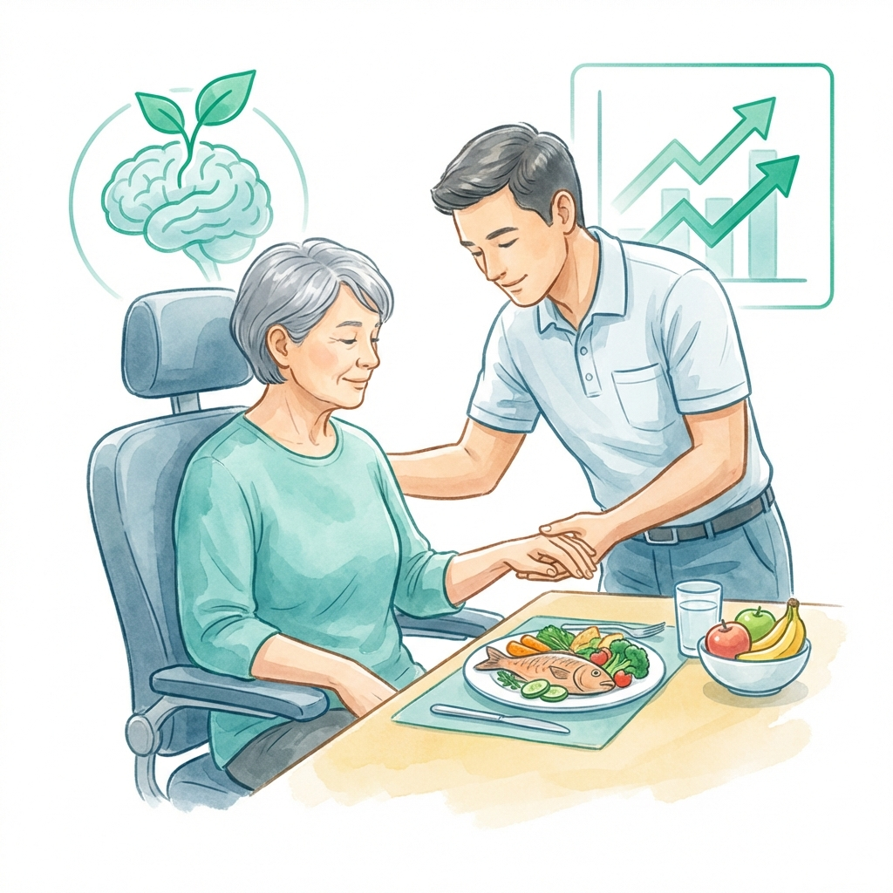

Nutrición Clínica para la Salud del Sistema Nervioso
Intervención profesional para el manejo de condiciones neurodegenerativas y secuelas neurológicas, priorizando la autonomía y seguridad del paciente.

Las enfermedades neurológicas afectan profundamente la relación del paciente con la alimentación. Desde dificultades motoras hasta cambios en la percepción sensorial, los desafíos son múltiples y evolucionan con el tiempo.
En Clínica Denki, nos especializamos en adaptar protocolos nutricionales que protegen la masa muscular, previenen la desnutrición y gestionan complicaciones como la disfagia, siempre con un enfoque humano y profesional.
Áreas de Intervención Especializada
Soluciones clínicas para desafíos neurológicos específicos.

Infarto Cerebral (EVC)
Recuperación metabólica y facilitación de la deglución post-evento.
Ver ServicioCompromiso con la Calidad de Vida
No solo diseñamos dietas; creamos estrategias que facilitan la vida diaria del paciente y su entorno familiar.
Soporte Neurológico Especializado
Accede a una evaluación especializada para mejorar el estado nutricional y la seguridad del paciente.